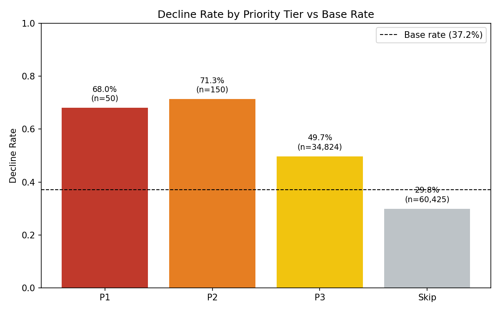
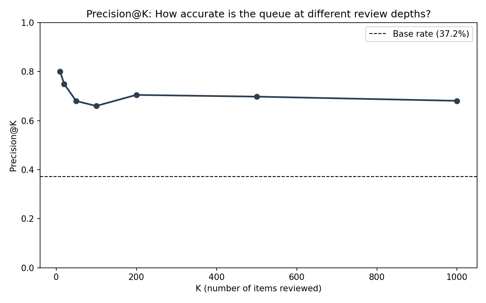
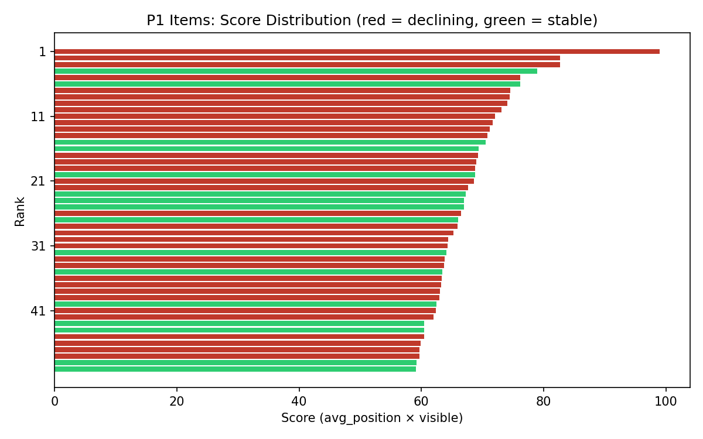

Research Paper
June 2026 · FlyRank ML Internship Capstone
Can a simple, transparent rule identify which content items in a search portfolio are likely to decline — before they do? Using 95,000+ content items across 57 brands from the FlyRank internship dataset (January–April 2026), this study built a rule-based baseline that scores content by search position and visibility, then compared it against a Random Forest classifier on the same data and split. The baseline achieved precision@20 of 60–70% against a base rate of 37%, and the model reached 90%+ on a random split — but dropped to near coin-flip (AUC 0.549) when validated on unseen clients. The honest conclusion: the rule provides a practical, auditable starting point for content review prioritization, while the model's apparent strength was substantially borrowed from client-level memorization. This paper presents ranked recommendations for content teams, with documented limits on what the evidence supports.
A content team managing thousands of pages faces a prioritization problem: which pages need attention right now? Reviewing every page is impractical. Waiting until traffic has already collapsed means the damage is done. The useful question is narrower: can we rank pages by decline risk so that the first 50 a reviewer opens are more likely to need work than a random sample?
This study treats that as a binary classification problem. Given a content item's search performance over January through March 2026, can we predict whether its impressions will drop by more than 20% in April? The goal is not a production system — it is a validated, transparent queue that a content reviewer can trust enough to start from.
The work follows a deliberate progression: a hand-built rule first (to set an honest floor), then a machine learning model (to test whether complexity earns its keep), then a grouped validation that asks whether either one generalizes beyond the clients it trained on.
The dataset comes from the FlyRank ML Internship Warehouse (fact_content_daily_performance table), a daily-grain export of Google Search Console and Google Analytics 4 metrics for content items across 57 brands. Each row represents one content item on one day.
| Parameter | Value |
|---|---|
| Date range | January 1 – April 30, 2026 |
| Filter applied | ga4_data_available = True |
| Total daily rows | 1,199,364 |
| Unique content items (labeled) | 142,628 |
| Content items after feature aggregation | 66,926 (model) / 95,000+ (playbook) |
| Brands | 57 |
15 raw daily metrics were aggregated to the content level using sum and mean, producing 31 features. A computed CTR column (clicks / impressions) was added. All features were drawn from January–March data only. April data was used solely for the label.
| Source | Features |
|---|---|
| Google Search Console | gsc_impressions, gsc_clicks, gsc_avg_position |
| Google Analytics 4 | ga4_pageviews, ga4_sessions, ga4_users, ga4_engaged_sessions, ga4_total_engagement_sec |
| Traffic channels | sessions_organic, sessions_direct, sessions_referral, sessions_social, sessions_paid, sessions_ai |
| Engagement | scroll_events |
| Computed | ctr (clicks / impressions) |
Three columns were excluded from features: gsc_data_available, ga4_data_available (filter flags, not predictive features), and gsc_sum_position (redundant with gsc_avg_position).
A content item is labeled as declining (1) if its total April 2026 impressions are less than 80% of its total March 2026 impressions. Otherwise it is labeled as not declining (0).
This label was chosen because it captures a meaningful drop (20%+) over a single month boundary, using the same metric (impressions) that content teams track operationally. The 80% threshold is a judgment call — a stricter threshold (70%) would produce fewer positives, a looser one (90%) would produce more.
All content items are identified by hashed IDs (content_hash_id). All clients are identified by hashed IDs (client_hash_id). No real URLs, brand names, search queries, or private data appear anywhere in this paper or in the exported files.
This study assumes that search position and visibility patterns observable in January–March carry signal about April decline. It assumes the label (20% impression drop) is a meaningful proxy for "content that needs attention." It does not assume that position causes decline, only that position patterns are associated with it in this dataset.
Before building any model, two signals were tested with bucket tables. CTR-vs-position was confirmed: decline rate rose from 32.5% at positions 4–10 to 58.3% at positions 21–50 (n = 1,040,092). Engagement rate was tested and showed the opposite of the expected pattern — higher engagement correlated with higher decline rate — so it was dropped. This negative result saved the baseline from including a misleading signal.
The baseline scores each content item as avg_position × visible, where visible = 1 if total impressions ≥ 100, else 0. Items are ranked by score descending (worst position among visible items first). Each item carries a single reason code (low_ctr_for_position) and an action label (review_and_optimize). No fitted weights. No learned parameters. The rule is fully transparent.
Two models were trained: Logistic Regression (readable, linear boundary) and Random Forest (non-linear, interaction-capable). Both used the same 31 features and the same train/test split. The Random Forest used 200 trees, max depth 10, and a fixed random seed (42).
| Split | Design | Purpose |
|---|---|---|
| Random split | 80/20 stratified, seed 42 | Standard comparison — content from the same client can appear in both train and test |
| Grouped split | GroupKFold by client_hash_id, 5 folds | Honest test — all content from one client stays in either train or test, never both |
The grouped split asks: does the model work on clients it has never seen? This is the honest test. The random split is included for comparison but is not the basis for any claim about model quality.
A six-point leakage checklist was applied: timeline check (features strictly before label window — clean), label-derived feature check (gsc_impressions is a sibling but removing it only dropped AUC by 0.012 — not dominating), product flag check (no FlyRank flags used — clean), top feature sanity check (no single feature suspiciously dominant), base rate printed alongside all metrics, and in-sample vs out-of-sample gap check (flagged overfitting — see Results).
| Metric | Base Rate | Baseline | Log. Reg. | Random Forest |
|---|---|---|---|---|
| Precision@10 | 0.530 | 0.600 | 0.700 | 0.800 |
| Precision@20 | 0.530 | 0.600 | 0.800 | 0.900 |
| Precision@50 | 0.530 | 0.640 | 0.880 | 0.920 |
| Precision@100 | 0.530 | 0.700 | 0.860 | 0.960 |
| F1 | — | — | 0.699 | 0.723 |
| AUC | — | — | 0.712 | 0.754 |
On a random split, the Random Forest appeared to earn its complexity: it beat Logistic Regression at every metric, which beat the baseline, which beat the base rate. But this split allows content from the same client in both train and test — so it does not test generalization.
| Metric | Random Split | Grouped Split | Gap |
|---|---|---|---|
| Precision@10 | 0.800 | 0.700 | −0.100 |
| Precision@20 | 0.900 | 0.700 | −0.200 |
| Precision@50 | 0.920 | 0.620 | −0.300 |
| Precision@100 | 0.960 | 0.630 | −0.330 |
| F1 | 0.723 | 0.637 | −0.086 |
| AUC | 0.754 | 0.549 | −0.205 |
Under grouped validation, AUC dropped from 0.754 to 0.549 — barely above the 0.50 coin-flip line. The model's ability to rank declining content above non-declining content nearly disappears on clients it has never seen. Training AUC was 0.832, confirming substantial overfitting (gap of 0.283).
Roughly a third of the model's precision@100 performance was borrowed from client-level memorization, not from learning generalizable decline signals. The honest performance number is the grouped number. The random split number overstates what the model actually knows.
The baseline rule, applied to the full playbook dataset (95,000+ items, base rate 37.2%), produced the following action queue:
| Priority | Items | Decline Rate | Base Rate |
|---|---|---|---|
| P1 — review within 1 week | 50 | 68.0% | 37.2% |
| P2 — review within 2 weeks | 150 | 71.3% | 37.2% |
| P3 — watch list | 34,824 | 49.7% | 37.2% |
| Skip — below visibility threshold | 60,425 | 29.8% | 37.2% |
P1 and P2 items are nearly twice as likely to be declining as a random sample (68–71% vs 37%). This is the operating precision of the queue that a reviewer would actually use.



This section exists to state what this work cannot claim, before a reader does. Writing limitations yourself is what earns trust.
An observational analysis of one portfolio snapshot (57 brands, January–April 2026). It identifies patterns associated with content decline and produces a ranked review queue. All findings are descriptive or directional — no causal claims are made.
It is not a production prediction system. It has not been validated across multiple time periods, geographies, or content types outside this portfolio. The model's poor grouped-validation performance (AUC 0.549) means it should not be used as a standalone predictor on new clients.
The rule confuses "never performed" with "declining." Content stuck at position 80 with 110 impressions scores high but may never have had meaningful traffic. Approximately 32% of P1 items were false positives of this type. A trend feature (impression change over time rather than average level) would likely address this, but was not available in the current feature set.
Client memorization. The Random Forest model learned client-specific patterns rather than generalizable decline signals. With only 57 brands and 8 clients in the grouped test fold, the model's apparent strength on random splits was substantially inflated. The single-fold grouped result is itself noisy — a cross-validated average across all 5 folds would be more stable.
Single time window. All findings are conditioned on January–April 2026. Seasonal patterns, algorithm updates, or competitive shifts in other periods could change which signals matter.
Label threshold is a judgment call. The 80% threshold for "declining" is not objectively correct. Different thresholds would produce different class distributions and different model performance.
No external outcomes. The label measures impression change, not business impact. A page that loses impressions but maintains conversions is labeled as declining even if its value hasn't changed.
These recommendations are ranked by how directly they follow from the evidence in this study. They are decision-support suggestions — a content reviewer makes the final call on every action.
| Priority | Recommendation | Evidence basis |
|---|---|---|
| 1 | Start content review with the P1 queue (top 50 items by position score) | 68% precision vs 37% base rate — nearly 2× more likely to find declining content than random review |
| 2 | For each flagged item, check whether it was ever performing before acting | 32% of P1 items were false positives — content that never had traffic, not content that lost it |
| 3 | Prioritize content older than 270 days for refresh, not just review | FlyRank research paper observed content decline after 270 days with recovery when refreshed (observational, no matched control) |
| 4 | Do not automate any action based on this queue alone | 32% false positive rate at P1; no action in this queue is validated for automation |
| 5 | Do not use the Random Forest model for scoring on new clients | AUC dropped from 0.754 to 0.549 under grouped validation — the model does not generalize |
| 6 | Rebuild the queue quarterly with fresh signal checks | Position-to-decline relationship may shift with algorithm updates or portfolio changes |
| 7 | Add a trend feature (impression change over time) in the next iteration | The rule's main failure mode — confusing "never performed" with "declining" — would be addressed by a feature that measures change, not level |
All notebooks, exported data, and figures are available in the project repository. The analysis can be rerun end-to-end from the source data using the notebooks below.
| Artifact | Location |
|---|---|
| Data contract | work/notebooks/w03_data_contract.ipynb |
| Baseline notebook | work/notebooks/w04_baseline.ipynb |
| Model training notebook | work/notebooks/w05_model.ipynb |
| Validation & leakage audit | work/notebooks/w06_validation.ipynb |
| Playbook notebook | work/notebooks/w07_playbook.ipynb |
| Ranked action queue (CSV) | work/outputs/playbook_action_queue.csv |
| Priority summary (CSV) | work/outputs/playbook_priority_summary.csv |
| Full project repository | github.com/cokezero20/FlyRank_AI_ML_Internship_NATIVIDAD |
Random seed: 42. Python libraries: scikit-learn, pandas, numpy, matplotlib. Data source: FlyRank internship warehouse (fact_content_daily_performance table, accessed via HuggingFace Datasets with token authentication).
Built on the FlyRank ML Internship dataset. The data, skills framework, and session curriculum were provided by FlyRank. The FlyRank research paper ("The State of AI-Driven SEO," March 2026) served as both a reference and a methodological case study throughout this work.